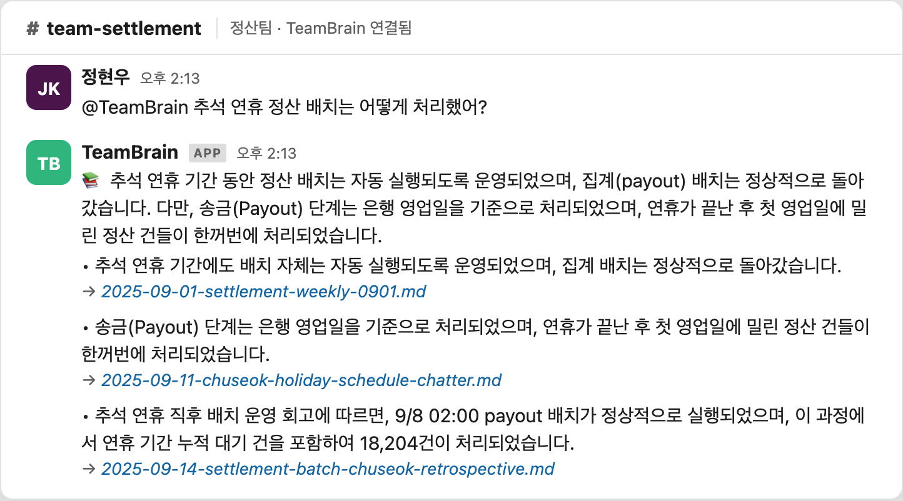
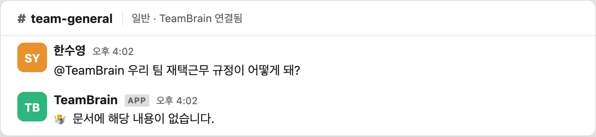
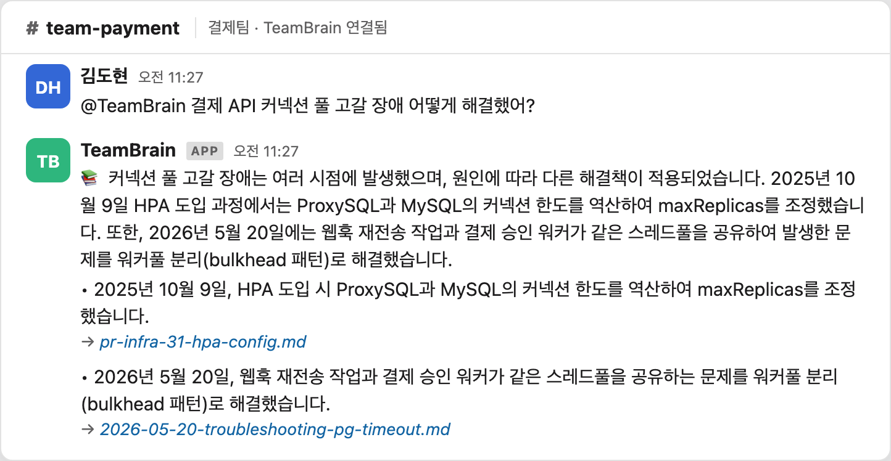

닮은 오답이 아닌,
진짜 결정을 찾아준다
그럴듯하게 닮은 오답(near-miss)이 아니라 진짜 결정 기록을 LLM 판단으로 가려 답하는 위키봇. 검색은 후보를 넓히는 역할만, 판별은 LLM이 본문을 읽고 한다.
- RAG
- Hybrid Search
- Embedding
- BM25
- Vector Search
- RRF Reranking
- Local LLM (Ollama)
- Python
- SQLite · FTS5 · sqlite-vec
- Slack Socket Mode
어느 평범한 하루 : 인물들이 슬랙에서 일한다
배경TeamBrain이 없던 시절의 날것의 풍경. 점심 투표·온보딩 환영 같은 잡담과 장애 스레드가 같은 화면에 뒤섞인 노이즈 환경이다. 정유진 SRE 합류 환영 대화로 인물 말투·관계를 소개하고, 곧이어 같은 사람들이 진짜 장애(커넥션풀 고갈)에 부딪힌다. 이 대화들이 나중에 wiki로 합성될 원재료다.
HikariPool-1 - Connection is not available, request timed out after 30000ms퇴근 30분 전 : 그날의 대화를 자동 수집
계획 · 미구현퇴근 30분 전, 그날의 슬랙·사내 문서를 자동 수집하는 파이프라인. 아직 구현되지 않은 push(자동 broadcast) 로드맵의 1단계다. 현재는 pull(멘션→답변)만 구현됐고, 이 수집·정리·보고 broadcast 3단계는 계획이다.
설계 메모
현재 raw는 사람이 작성하는 읽기전용 입력. 이 자동 수집 단계는 계획 단계이며, 워커가 raw에 직접 쓰는 부작용(Phase 3 교훈)을 피하도록 초안 → 사람 검수 구조로 설계 예정.
실측 규모 참고: raw 987→1576건으로 near-miss가 증식했고 노이즈 824건이 섞여 있다.
wiki 자동 정리 : 흩어진 대화를 한 편의 개념으로
계획 · 미구현
수집된 raw 대화들이 wiki 개념 아티클 한 편으로 합성되는 과정. 여러 시점·여러 채널의 조각(PR-112 fail-open 결정 → INC-204 87건 중복청구 → fail-closed 핫픽스 → DB 유니크 2중화)이 idempotency.md 한 편으로 묶인다. 이것이 실제 wiki 구조와 동일하지만, '자동으로 매일 정리'되는 부분은 계획.
- raw/pr/pr-112-idempotency-middleware.md
- raw/slack/2026-04-21-inc204-realtime.md (87건 중복청구)
- raw/pr/pr-140-hotfix-fail-closed.md
- raw/2026-04-29-decision-idempotency-db-unique.md
- raw/slack/2026-06-15-idem-ttl-48h-approved.md
증분 합성
멱등성 (Idempotency) wiki/idempotency.md
Idempotency-Key(UUID) 전송 → 서버 2계층 가드[1] Redis 캐시
idem:{key} TTL 24h→48h[2] DB
UNIQUE(payment_idempotency.idempotency_key) · 최종 방어선
- 2026-03-15 · PR-112김도현 'Redis 타임아웃 시 결제 못 받는 손실이 더 크다' → fail-open 결정
- 2026-04-21 · INC-204프로모션 트래픽 → fail-open으로 87건 중복 청구
- 당일 · PR-140fail-closed 핫픽스 배포
- 2026-04-29DB 유니크 2중화로 결정을 뒤집음
교훈: 멱등성은 캐시가 아니라 돈이 실제 나가는 외부 부수효과 직전의 영속 저장소 유니크 제약이 최종 방어선.
금일 업무 현황 보고 : 슬랙으로 자동 broadcast
계획 · 미구현정리된 wiki를 바탕으로 '금일 업무 현황 보고'를 슬랙 채널에 자동으로 쏘는 모습. 이것이 push(자동 broadcast) 방식이며 현재는 Roadmap이다. 이 막을 끝으로 주황 구간이 닫히고, 다음 섹션에서 '여기부터 실제 동작' 전환선이 온다.
📚 금일 업무 현황 보고
push(자동 broadcast)는 Roadmap. 현재 구현된 것은 pull(멘션→답변)뿐. 아래 '여기부터 실제 동작'에서 진짜로 돌아가는 부분이 시작된다.
신뢰의 기준점
지금부터 보여지는 것은 실제로 실행되는 코드다. 검색은 후보를 넓히는 역할만 하고, 판별은 LLM이 본문을 읽고 한다. 아래 출력은 모두 wiki_qa.py를 실제로 돌려 받은 진짜 봇 출력이다(외관만 제작).
wiki 빌드 : raw에서 개념을 합성한다
구현됨
실제로 돌아가는 첫 단계. raw 노트를 읽어 wiki 개념 아티클을 증분 합성하고 검색 인덱스(docs/index.db, FTS5 BM25 + sqlite-vec 384d)를 빌드한다.
슬랙봇에 묻다 : wiki 근거로 답한다
구현됨
pull 방식의 핵심: 팀원이 슬랙에서 @TeamBrain을 멘션하면 하이브리드 검색(top-30) → LLM 본문 판단 → 출처 단 답변. 있으면 출처와 함께, 없으면 솔직히 거부한다.
📚 추석 연휴 정산은 9/8 02:00 payout 배치로 처리됐고, 연휴 기간 누적 대기 건을 포함해 총 18,204건이 한 번에 정산됐습니다.
🤷 문서에 해당 내용이 없습니다.


재현 명령
python3 scripts/llm/wiki_qa.py "추석 연휴 정산 배치는 어떻게 처리했어?"
python3 scripts/llm/wiki_qa.py "우리 팀 재택근무 규정이 어떻게 돼?"
near-miss를 가른다 : 닮은 오답 vs 진짜 결정
구현됨프로젝트의 단 하나의 진짜 차별점. '커넥션 풀 고갈'이라는 같은 토큰을 공유하는 5개 문서(진짜 C6 장애 1건 + near-miss 4건)에서, 순수 검색은 정답을 88~171위로 묻어버리지만 2단 구조(검색 top-30 → LLM 본문 판단)가 진짜 결정을 건져낸다.
📚 HPA 도입 시 ProxySQL/MySQL 커넥션 한도를 역산해 maxReplicas를 조정하고, 웹훅 재전송과 결제 승인 워커가 공유하던 스레드풀을 bulkhead로 분리해 해결했습니다.

측정 : 모델 크기로 풀 문제가 아니다
순수 검색에선 정답이 88~171위로 묻힌다. 768d 코사인도 C3 0.527/0.523 동률·A4 역전 → 판별은 검색이 아니라 LLM 본문 읽기로 한다.
아키텍처 · 차별점 요약
요약전체 흐름을 한 장으로. 데이터 계층(SRC→RAW→WIKI→IDX)과 QA 계층(Q→S1→S2→A)을 두 트랙으로 그린다.
차별점 : 이 한 가지
near-miss를 검색이 아닌 판단으로 가른다. relevance ≠ truth. 세컨드브레인/PKM은 입력이 깨끗하다는 전제라 near-miss 문제 자체가 없고, 일반 RAG는 'retrieval만 고치면 된다'는 프레임이라 reasoning이 사각지대다.
정직성 가드
할루시네이션 방지(RAG 기본기)·보안용 로컬 LLM(제약 조건)은 약한 차별점이라 내세우지 않는다.